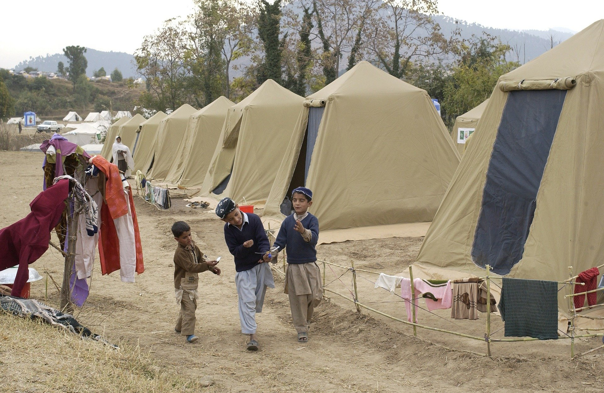

Dans une volonté de calmer les esprits, les talibans se sont engagés à lire dès que possible la dernière édition du rapport du GIEC.
Une annonce surprise qui a été favorablement accueillie par la communauté internationale. « Cela prouve qu’ils peuvent être raisonnables mais qu’ils se contentent juste de le lire, pas d’en appliquer les exigences » s’est félicité pour sa part le secrétaire général de l’ONU. « Ce ne sont pas de si mauvais bougres que ça finalement mais attention, si nous ne prêtons pas attention, ils pourraient prendre des décisions pour empêcher drastiquement les prochaines hausses de températures » a réagi pour sa part le chef du Pentagone. Cependant la Russie et la Chine, alliés objectifs des talibans, ont montré un peu plus de réserves sur cette décision, appelant les talibans à revenir à la raison sous peine de leur couper les vivres. « Nous espérons que les talibans ne se radicaliseront pas dans une application stricte du rapport du GIEC, faute de quoi nous serons dans l’obligation de suspendre nos accords »
Emmanuel Macron l’a réaffirmé, la France, comme les autres pays européens prendra sa part pour aider les Afghans. Le chef de l’État a ainsi promis que la France accueillerait dès que possible un réfugié.
« J’ai bien conscience du drame qui se joue là-bas mais nous ne pouvons pas ouvrir nos frontières. Aussi, je propose que la France accueille sur son territoire provisoirement un réfugié » a déclaré le chef de l’État pour couper court aux critiques dont il fait l’objet depuis quelques jours. Gabriel Attal, porte-parole du gouvernement a présenté en outre les conditions d’entrées de ce réfugié qui seront drastiques avec l’obligation de porter trois bracelets électroniques de manière à savoir où il se trouverait instantanément avec interdiction de se déplacer à plus de 15 kilomètres du lieu qui lui sera offert. « Si nous accueillons quelqu’un, il faut que nous puissions savoir ce qu’il fait et où il va, c’est tout à fait normal » justifie-t-il. De plus, ce réfugié devra dans les 25 premières semaines de résidence effectuer un pointage quotidien au commissariat le plus proche de chez lui et justifier d’un emploi sous quinzaine, faute de quoi il sera renvoyé dans son pays.
LE POINTVIRGULE | ACTUALITÉ? |
MAGAZINE |
Consultez les articles de la rubrique Actualité, suivez les informations en temps réel et accédez à nos analyses de l’actualité. Climat : ce qu’il faut savoir Penser avec les Grecs La disparition de Delphine Jubillar Index des personnalités Index des journalistes du PointVirgule Le Point pour les déficients visuels |
Expérience Le Point
La boutique Abonnements Applications mobiles Nos partenaires Nous sommes OJD Les forums du PointVirgule |